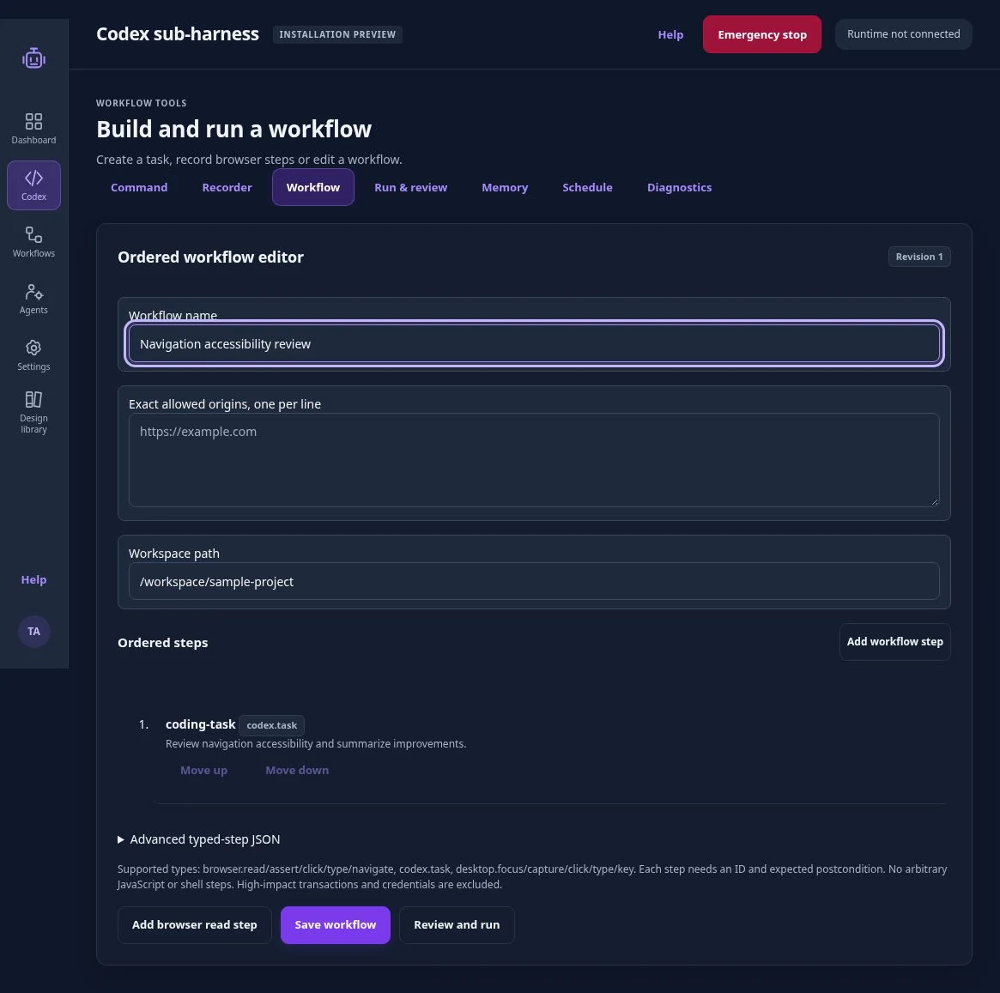
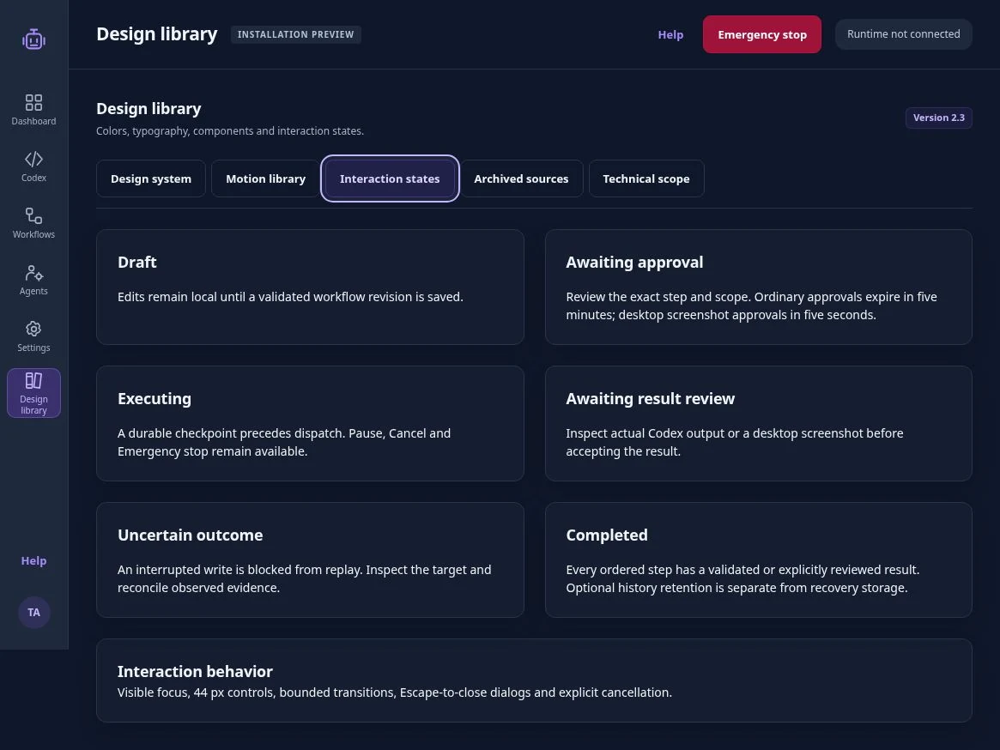
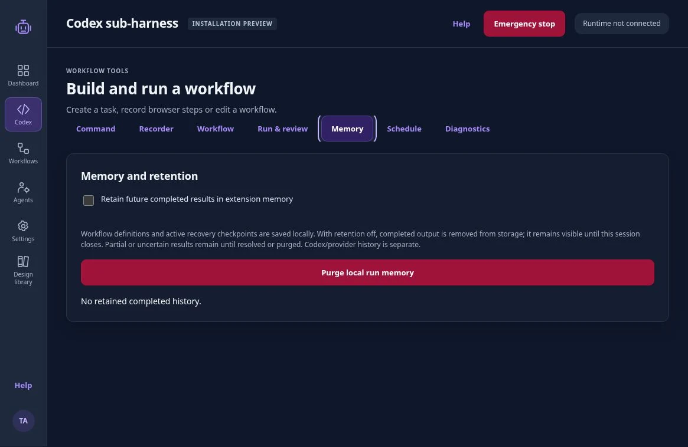
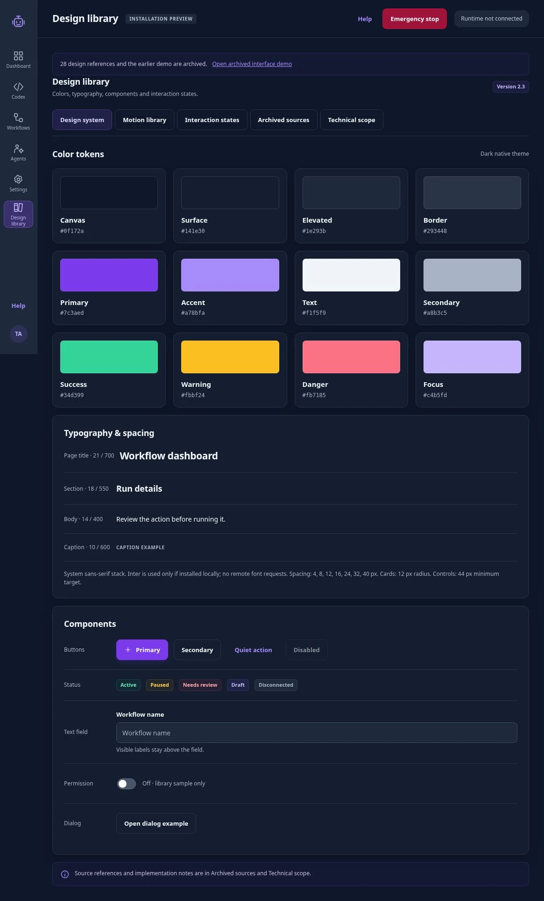

Approve the specific action.
Browser origins, workspace access and native runtime connection are separate concerns. Consequential steps require one-time approval tied to the workflow revision and action.
03 / Taska / Independent project
For people delegating browser and coding work to an AI assistant. Taska makes the steps, access and stopping point reviewable before a run.
A request like “review this project” leaves the person delegating it with unanswered questions: what can the assistant access, which steps will it take, and when will it stop?
I designed the review around those decisions. Users inspect a draft before a run, approve consequential actions individually, and check an interrupted action’s result before retrying.
This is an independent project based on my browser-assistant research and specifications. The application screens below show an installation preview, not a connected runtime.

Permission to access a workspace does not approve every action inside it. Taska ties each consequential approval to a specific step and workflow revision. A changed draft needs a new decision.
If an interruption makes the result unclear, the interface shows that uncertainty instead of offering a blind retry. This is intended to prevent the same write from being sent twice.
I compared browser architectures and model choices in the research and product documents. Earlier designs are archived separately.
01 / The workflow
Describe the task or record browser steps.
Check what each step will do.
Permit this step once.
Check what ran and what changed.
Save the workflow or set a schedule.
Each stage has a separate review or retention decision.
The Codex sub-harness lets users draft coding tasks and choose a workspace and sandbox before a run. Connecting the runtime is a separate step from approving work.
Users can also draft a workflow from recorded clicks and targets. The recorder leaves out typed values; users supply them during review.

02 / Control & memory
Browser origins, workspace access and native runtime connection are separate concerns. Consequential steps require one-time approval tied to the workflow revision and action.
The app saves a recovery checkpoint before sending an action. If an interruption leaves the outcome unclear, it blocks another attempt until the result is checked.

My research distinguished page context, task state, session memory and an action log. The current implementation separates recovery storage from optional completed history. Recovery requires storing state before a task has finished.
Completed history is off by default. Users can turn it on or delete local records. Deleting local records does not remove copies held by Codex or the model provider. The sandbox limits writes and tool networking, not every filesystem read, so real work requires an appropriately isolated environment.

03 / Design system
Violet marks the primary action. Warning and error states use separate colors on the dark background.
Current UI checks cover representative interactions and measured CSS widths.


Selection markers move between options. Reordered steps keep their identity. Closing a dialog returns focus immediately; its visual exit finishes separately. Reversing an action continues from the displayed state.
Try the tabs, screenshot viewer and expandable sections below.
The marker moves to the selected tab in 380 ms. The panel enters in 460 ms, with no delay before keyboard focus or selection changes. Switch tabs again before it finishes to reverse the movement.
Select any application screenshot to open its viewer. It opens in 380 ms and exits in 220 ms. Escape returns focus immediately. Reopening during the exit continues from its current position.
This disclosure changes its open state immediately, then adjusts its height over 380 ms. Reverse it before it finishes: the next transition starts at the current height.
Shared tokens: press 120 ms · feedback 220 ms · surface 380 ms · exit 220 ms · context 460 ms. Easing: cubic-bezier(.2,.8,.2,1).